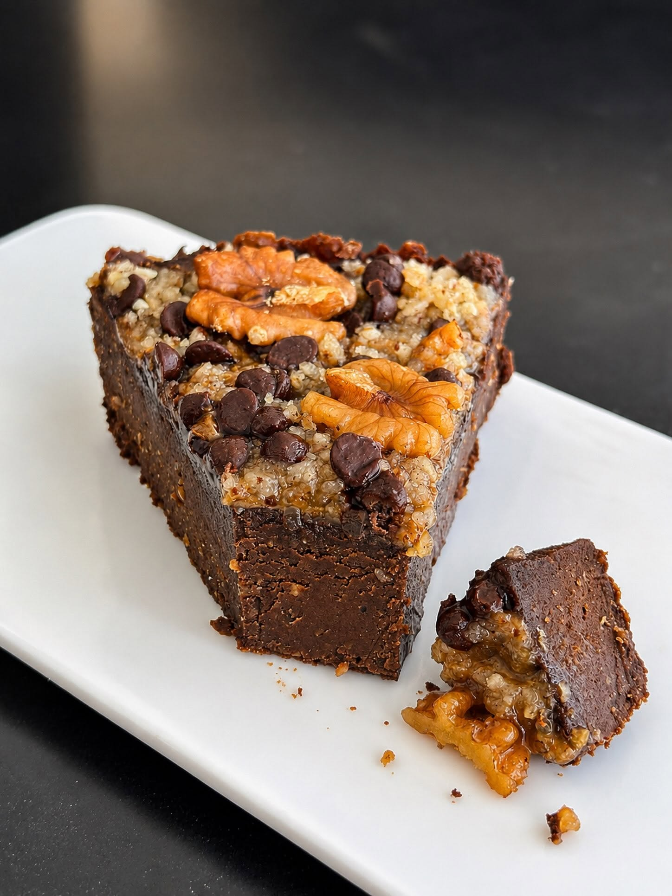

Postres y Productos Saludables
Bienvenido a Nutrigrain. Somos un negocio dedicado a la elaboración de postres y productos a base de cereales, preparados con ingredientes seleccionados para ofrecer opciones deliciosas y de calidad.
Política de Privacidad¿Quiénes Somos?
Nutrigrain nace con el objetivo de ofrecer productos que combinan sabor, calidad y una selección cuidadosa de ingredientes.
Elaboramos postres y productos a base de cereales para brindar alternativas ideales para diferentes momentos del día.
Nuestros Productos
🍰 Postres
Diferentes variedades de postres elaborados con dedicación y ingredientes seleccionados.
🥣 Productos con Cereales
Productos preparados con cereales buscando combinar nutrición, sabor y calidad.
📱 Atención por WhatsApp
Brindamos atención personalizada para consultas y pedidos mediante WhatsApp Business.
Nuestro Compromiso
En Nutrigrain valoramos la confianza de nuestros clientes y trabajamos para proteger la información personal proporcionada mediante nuestros canales de atención.
Puedes conocer más sobre el tratamiento de datos personales en nuestra Política de Privacidad.